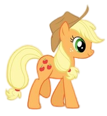
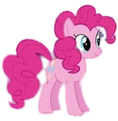
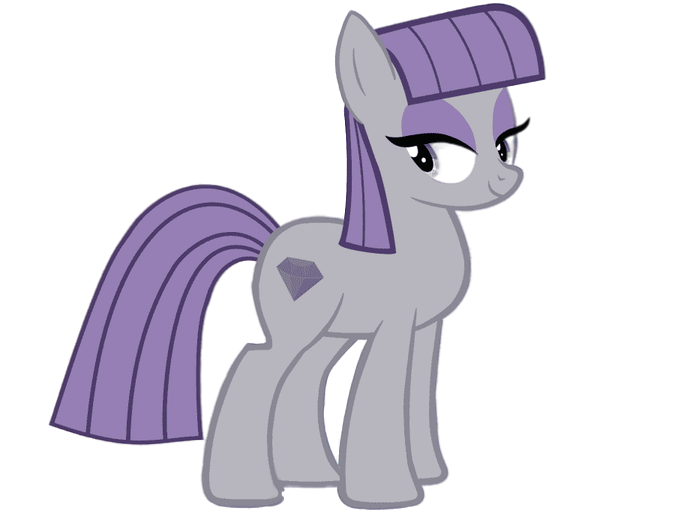
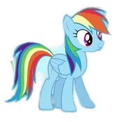
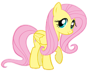
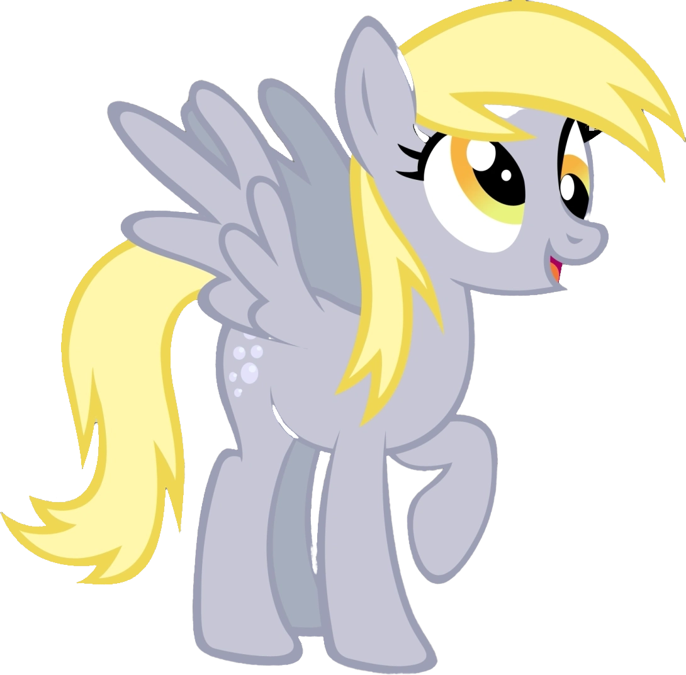
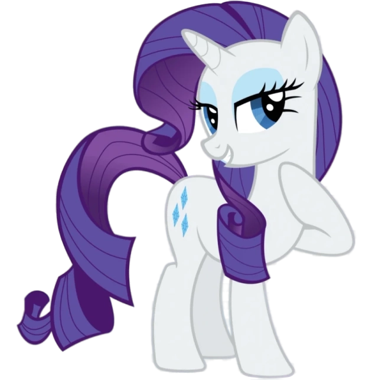
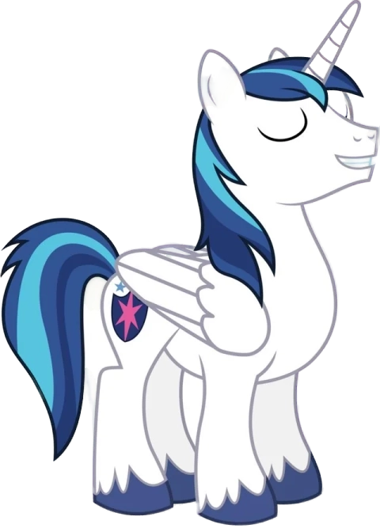
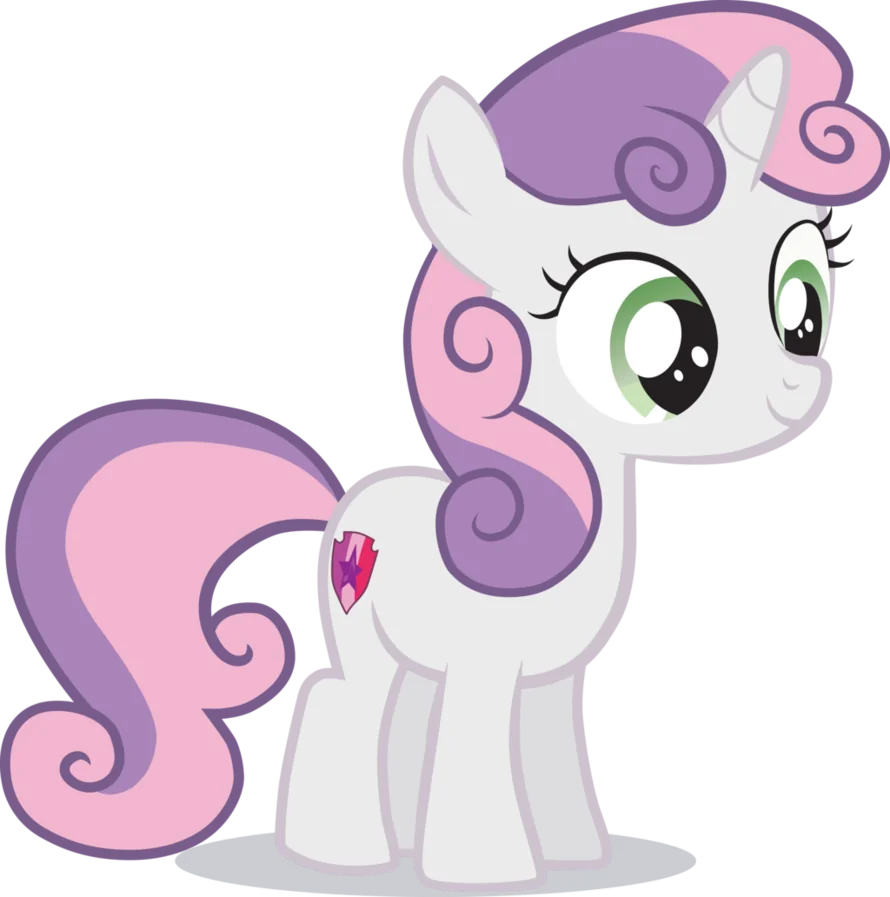

«Дружба — это чудо» — мультсериал, основанный на популярной франшизе Hasbro «Мой маленький пони». Премьера шоу состоялась 10 октября 2010 года на канале Hasbro The Hub, который с 13 октября 2014 года известен как Discovery Family. Сериал завершился после девяти сезонов 12 октября 2019 года. Это воплощение франшизы называют четвёртым поколением, или G4, «Моего маленького пони». Сериал был разработан для телевидения Лорен Фауст, известной своей работой над двумя популярными и получившими признание критиков франшизами Cartoon Network, а именно «Суперкрошки»и «Дом Фостера для воображаемых друзей».
В сериале рассказывается о пони-единороге по имени Твайлайт Спаркл, ученице принцессы Селестии, правительницы волшебной страны Эквестрии. Принцесса поручает Твайлайт узнать, что такое дружба, и отправляет её и её помощника, детёныша дракона по имени Спайк, в Понивилль. Там они знакомятся с несколькими интересными пони, в том числе с энергичной Рейнбоу Дэш, гламурной Рарити, трудолюбивой Эпплджек, робкой Флаттершай и гиперактивной Пинки Пай. Вместе они отправляются навстречу приключениям, решают различные проблемы и узнают о магии дружбы.
Сериал был разработан Лорен Фауст для Hasbro как перезагрузка франшизы My Little Pony. Фауст представляла свою собственную линию игрушек Milky Way и the Galaxy Girls, а также анимационные телесериалы руководителю Hasbro Studios Лизе Лихт, когда Лихт попросила ее придумать новую версию франшизы My Little Pony. Разработка началась в 2008 году, а производство первого сезона растянулось на весь 2009 год. Джейсон Тиссен сделал раскадровку и анимацию двухминутного ролика для одобрения со стороны Faust и Hasbro. Основная аудитория шоу — девочки в возрасте от 4 до 12 лет, и Фауст создал шоу таким образом, чтобы родители могли смотреть его вместе с дочерьми. Сериал стал культовым среди взрослых. Финансовые отчёты DHX Media свидетельствуют о том, что DHX Media получала около 6 миллионов канадских долларов в год за производство первых трёх сезонов шоу.
Мерчандайзинг — движущая сила франшизы «Мой маленький пони». представлены в нескольких вариантах: игривые пони — игрушки стандартного размера G4; модные пони — игрушки большого размера G4; мини-фигурки — игрушки маленького размера.
«Дружба — это чудо» из «Моего маленького пони» связана с перезапуском линейки игрушек «Мой маленький пони» в 2010 году, в которой есть фигурки и игровые наборы по мотивам сериала и наоборот; сериал в первую очередь существует для того, чтобы продвигать линейку игрушек. Компания Hasbro, владеющая брендом, стала рассматривать «Мой маленький пони» как бренд «образа жизни» с более чем 200 лицензиями в 15 категориях товаров. В 2014 году объём розничных продаж бренда составил один миллиард долларов США и 650 миллионов долларов США в 2013 году. Примерно раз в год в линейке игрушек Friendship is Magic появляются новые модели. Первые игрушки продавались под названием Понивилль, как и их предшественники G3, а затем появились Пони-свадьба, Хрустальная империя, праздник Хрустальной принцессы, Радуга силы, Магия знаков отличия и Исследуй Эквестрию.
В сериале есть основная группа из шести пони и множество второстепенных и эпизодических персонажей. По мере взросления у пони появляются отметины на боках, которые символизируют их предназначение или призвание в жизни.









Помимо этих трёх видов, принцесса Селестия, принцесса Луна, принцесса Кейденс, Твайлайт Спаркл и Фларри Харт обладают крыльями пегаса, рогом единорога и, в зависимости от изображения, магией земных пони. В сериале их называют аликорнами. И Селестия, и Луна обладают необычайной магической силой, позволяющей им поднимать солнце и луну. Кейденс обладает силой любви, которая, по словам Твайлайт, позволяет ей нести любовь повсюду, куда бы она ни пошла, и может погасить вражду в сердцах двух пони. Твайлайт способна распространять магию дружбы по всей Эквестрии. Фларри Харт — аликорн от природы.
Пони на выставке можно разделить по возрасту и полу на жеребят (молодые самцы), кобылок (молодые самки), кобыл (самки постарше) и жеребцов (самцы постарше). Пол пони можно определить по форме и размеру морды: у жеребцов морды угловатые, квадратные и крупнее, а у кобыл морды более округлые и намного меньше, чем у жеребцов. Однако это не относится к некоторым аликорнам. У жеребцов также более крупное, а иногда и более массивное тело, чем у кобыл.
Ещё один способ определить пол пони — по ресницам и копытам: у кобыл копыта того же цвета, что и шерсть, а у некоторых жеребцов копыта без шерсти, как у Биг Макинтоша, Шайнинг Армора или Принца Блюблада. У кобыл и кобылок есть ресницы, а у жеребцов и жеребят — нет. Однако у маленьких пони есть ресницы: у самцов — одна ресница, у самок — две.
В предыдущих поколениях «Мой маленький пони» всех молодых пони часто называли «детёнышами пони», в то время как в «Дружба — это чудо» молодых пони и детёнышей пони различают. Молодых пони называют просто «кобылками», «жеребцами» или «молодыми пони», а детёнышей пони относят к жеребяткам.